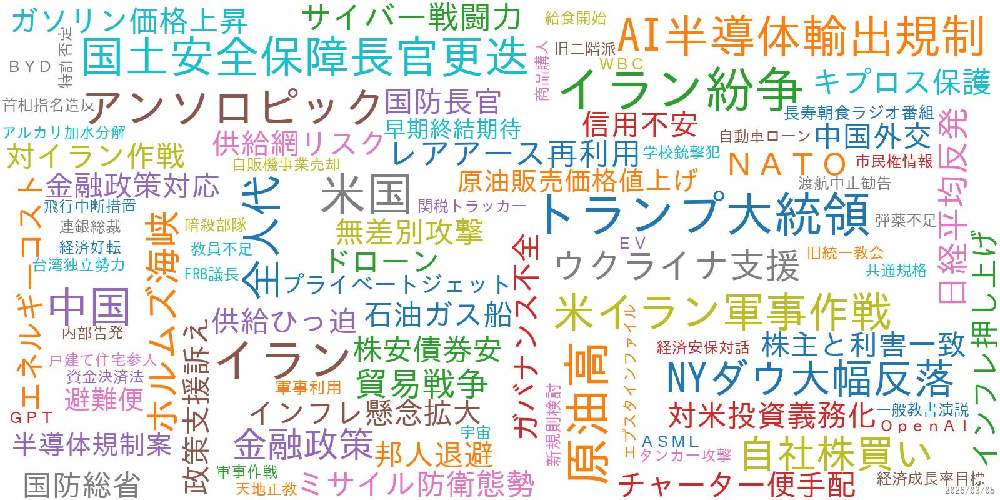

2026/2/25 15:39:57 更新

●コメント(Gemini)●
本日、国内外で注目を集めたのは、トランプ大統領の一般教書演説と、それに対する米民主党議員の抗議行動です。トランプ氏は経済の好調をアピールしつつ、イランへの強硬姿勢も示しました。国内では、日銀審議委員人事が発表され、リフレ派とされる浅田氏と佐藤氏が起用されたことが、金融政策の方向性に影響を与える可能性があります。経済面では、日経平均が取引時間中の最高値を更新するなど、株式市場は活況を呈していますが、都心中古マンション市場には陰りも見え始めています。海外では、中国の春節連休中の国内旅行支出が記録を更新し、景況感の改善を示唆する一方、メキシコではカルテルによる暴力が深刻化し、観光地にも影響が出ています。AI分野では、米国防総省とAI企業アンソロピックとの間で、軍事利用を巡る対立が表面化しています。
●重要ニュース●
1. トランプ氏、一般教書演説でイランに言及 「脅威に立ち向かう」（ロイター、ブルームバーグ、BBC等）2026/02/25
2. 日銀委員に中央大名誉教授の浅田氏と青学大教授の佐藤氏－政府提示（ブルームバーグ、日経）2026/02/25
3. 日経平均終値5万8583円 最高値更新、日銀人事案で利上げ観測後退（日経）2026/02/25
4. メキシコのカルテル暴力の後、プエルトバヤルタでBBCが被害を目撃（BBC）2026/02/25
5. 米上院有力議員がバイナンスの調査開始、イランとロシア巡る疑惑で（ブルームバーグ、NYタイムズ）2026/02/25
6. トランプ氏、一般教書演説で株高アピール 退職貯蓄制度への拠出表明（ロイター）2026/02/25
7. 高市首相、安定的な国債発行に万全期す－市場関係者と緊密対話（ブルームバーグ）2026/02/25
8. 日本、2031年までに台湾近くの島にミサイルを配備へ（BBC）2026/02/25
9. 米国防総省高官、アンソロピック従わぬなら「法律で強制」 AI軍事利用(日本経済新聞)2026/02/25
10. 高市首相、自民議員315人に3万円のカタログギフト「法令上問題ない」(日経、時事)2026/02/25
●経済ニュース●
1. 1月スーパー販売2.7％増、11カ月連続プラス 節約志向も＝チェーンストア協会(ロイター)2026/02/25
2. 1月百貨店売上は2.3％増、国内客がインバウンド減カバー＝百貨店協会(ロイター)2026/02/25
3. インフレ基調指標、1月もそろって2％割れ 方向感はまちまち＝日銀(ロイター)2026/02/25
4. アサヒ松山社長、ビールのブランド強化策を拡大－シェア回復狙う(ブルームバーグ)2026/02/25
5. 中国、春節連休の国内旅行支出が記録更新－景況感の改善示唆(ブルームバーグ)2026/02/25
6. 香港、今年は2.5～3.5%成長目指す－昨年より強気の見通し(ブルームバーグ)2026/02/25
7. 米関税政策の影響を懸念、予見性低く企業に不安生じる－貿易会会長(ブルームバーグ)2026/02/25
8. 都心中古マンションで広がるワニの口 売り出しと成約に差、実需限界か(日経)2026/02/25
9. ツムラ、「薬用養命酒」買収 ６８億円、知名度生かし販売拡大(時事)2026/02/25
10. ウォルマートから「王冠」奪ったアマゾン、売上高トップの座に(WSJ)2026/02/25
●国内ニュース●
1. 教育新財源を前向きに検討、教育国債とするかは未定＝高市首相(ロイター)2026/02/25
2. 予算年度内成立を目指す、国会審議誠実に対応＝高市首相(ロイター)2026/02/24
3. 自民、３月１３日採決を提案 予算案、審議五十数時間に短縮(時事)2026/02/25
4. イランで日本人１人拘束 ＮＨＫテヘラン支局長か(時事)2026/02/25
5. 河川敷に無許可コース 住民困惑(yahoo)2026/02/25
●海外ニュース●
1. 米民主議員が2年連続退場、トランプ氏演説でオバマ氏やゆ動画に抗議(ロイター)2026/02/25
2. 豪首相、爆弾脅迫で公邸から一時避難 不審物は見つからず(ロイター)2026/02/25
3. ウクライナ、戦争開始から5年目を迎え、死者を追悼(BBC)2026/02/25
4. セネガルの首相がより厳しい反LGBT法を提案、刑期を倍増(BBC)2026/02/25
5. ドイツ首相が初の中国訪問のため北京に到着(BBC)2026/02/25
●その他ニュース●
1. ルーブル美術館長、マクロン大統領に辞表提出 強盗やストで引責(ロイター、BBC)2026/02/25
2. 仲間由紀恵 4度目の朝ドラ出演へ(yahoo)2026/02/25
3. りくりゅう・木原龍一、三浦璃来にキャンピングカー米横断旅行を断られ(yahoo)2026/02/25
4. トランプ氏一般教書演説、民主党議員が「黒人は猿じゃない!」ﾌﾟﾗｶｰﾄﾞ掲げ→「USA!USA! USA!」とのｺｰﾙの中、議場から退去させられる(2ch)2026/02/25
5. グーグル元派遣社員(33)、ソフトバンクに爆破・殺害予告(2ch)2026/02/25
6. 大阪「テポドン」名乗る半グレグループ率いた男に懲役4年6か月の判決 知人男性に暴行し現金100万円脅し取ろうとした罪(2ch)2026/02/25
7. 三浦璃来 木原からの旅行誘い断る(yahoo)2026/02/25
8. 鈴木保奈美 大学入試英語「87点」(yahoo)2026/02/25
9. タイラ・バンクスに対する終わりのない裁判(NYタイムズ)2026/02/25
10. スケジュールについて強調するのをやめる4つの方法(NYタイムズ)2026/02/25
●ロイター●
1. 米民主議員が2年連続退場、トランプ氏演説でオバマ氏やゆ動画に抗議(ロイター)2026/02/25
2. トランプ氏、一般教書演説でイランに言及 「脅威に立ち向かう」(ロイター)2026/02/25
3. 1月スーパー販売2.7％増、11カ月連続プラス 節約志向も＝チェーンストア協会(ロイター)2026/02/25
4. 日本経済は好調持続、これ以上財政・金融吹かせばインフレ高進＝黒田前日銀総裁(ロイター)2026/02/25
5. 1月百貨店売上は2.3％増、国内客がインバウンド減カバー＝百貨店協会(ロイター)2026/02/25
●ブルームバーグ●
1. 太陽HDが非上場化へ､特別委がKKR買収提案の妥当性認める－関係者(ブルームバーグ)2026/02/25
2. アサヒ松山社長、ビールのブランド強化策を拡大－シェア回復狙う(ブルームバーグ)2026/02/25
3. AIディストピア論で株価急落、シトリニ創業者も驚き－不安が最高潮に(ブルームバーグ)2026/02/25
4. 日銀委員に中央大名誉教授の浅田氏と青学大教授の佐藤氏－政府提示(ブルームバーグ)2026/02/25
5. 中国、春節連休の国内旅行支出が記録更新－景況感の改善示唆(ブルームバーグ)2026/02/25
●BBC●
1. トランプ氏、経済を称賛し、過去最長の一般教書演説でイランを脅かす(BBC)2026/02/25
2. メキシコのカルテル暴力の後、プエルトバヤルタでBBCが被害を目撃(BBC)2026/02/25
3. メキシコのカルテルの暴走の後、さらなる暴力の脅威が迫る(BBC)2026/02/25
4. ウクライナ、戦争開始から5年目を迎え、死者を追悼(BBC)2026/02/25
5. 日本、2031年までに台湾近くの島にミサイルを配備へ(BBC)2026/02/25
●NYタイムズ●
1. トランプの一般教書演説：バラ色の予測と怒りの攻撃(NYタイムズ)2026/02/25
2. メキシコはトランプとカルテルの間で板挟みになっている(NYタイムズ)2026/02/25
3. 北東部の嵐(NYタイムズ)2026/02/25
4. エプスタイン・ファイルの余波(NYタイムズ)2026/02/25
5. コロンビア脳研究所のリーダーがエプスタインとの友情を理由に辞任(NYタイムズ)2026/02/25
●WSJ●
1. 奇妙な米株市場、どう解釈すべきか(WSJ)2026/02/25
2. 習氏の粛清、次は誰か 中国ウォッチャーが読む予兆(WSJ)2026/02/25
3. トランプ氏、ネットフリックス取締役の解任要求 元オバマ政権高官(WSJ)2026/02/25
4. トランプ氏、新関税の税率を15％に引き上げ(WSJ)2026/02/25
5. AI向け発電、ジェットエンジン転用に熱視線(WSJ)2026/02/25
●日経●
1. 日経平均終値5万8583円 最高値更新、日銀人事案で利上げ観測後退(日経)2026/02/25
2. 都心中古マンションで広がるワニの口 売り出しと成約に差、実需限界か(日経)2026/02/25
3. 日銀委員に中大名誉教授・浅田氏と青学大教授・佐藤氏 政府人事提示(日経)2026/02/25
4. トランプ氏、テック企業のAI電力開発を義務化 一般教書演説［映像あり］(日経)2026/02/25
5. 「SaaSの死」に続く「ECの死」 買い物エージェントの破壊力(日経)2026/02/25
●時事●
1. 高市首相、カタログギフト配布は「問題ない」 自民衆院３１５人に３万円(時事)2026/02/25
2. フィギュアスケート団体メンバーに団長特別賞 日本選手団が解団式―ミラ(時事)2026/02/25
3. 中国、日本企業「色分け」か 対日貿易安定化で(時事)2026/02/25
4. 捜査報告書の公開禁止 トランプ氏の機密文書持ち出し事件―米地裁(時事)2026/02/25
5. 高市首相、自民議員にカタログギフト 「政党交付金は使用せず」(時事)2026/02/25
●yahoo●
1. 米国は黄金時代 米大統領アピール(yahoo)2026/02/25
2. 暑さ・梅雨・台風 今年の傾向は(yahoo)2026/02/25
3. 分離帯に衝突 高校生ら2人死亡(yahoo)2026/02/25
4. 河川敷に無許可コース 住民困惑(yahoo)2026/02/25
5. 営業職だけ賃上げ 人材争奪戦激化(yahoo)2026/02/25
●AI関連●
1. 米国防総省高官、アンソロピック従わぬなら「法律で強制」 AI軍事利用(日本経済新聞)2026/02/25
2. 米国防総省、AI企業アンソロピックに軍事利用制限の解除を要求 拒めば排除の脅し(CNN.co.jp)2026/02/25
3. 求職活動、4割がAI利用 履歴書作成やPR添削 民間調査（時事通信）2026/02/25
4. 「AI×SFA」で 営業組織はこう変わる(ビジネス+IT)2026/02/25
5. AIは人の意識を代弁できるか 仮想の「1千人」で実験してみると… [AIの時代](朝日新聞)2026/02/25
●2ch●
1. 文春高市早苗首相が「当選祝い」カタログギフトを衆院議員に配っていた!取材に複数の事務所が受領を認める ★11(2ch)2026/02/25
2. 東京新聞「#ママ戦争止めてくるわ」はなぜ共感され、非難されるのか 戦争を「自分の問題」にしたメッセージの意義は:東京新聞 ★3(2ch)2026/02/25
3. 高市首相、当選祝いのカタログギフト「ねぎらいの気持ち」「法令上問題ない」…1人約3万円を315人に ★2(2ch)2026/02/25
4. 東京都内の万引き検挙数が6000件超え うち10%以上が小中学生によるもの ★2(2ch)2026/02/25
5. トランプ氏一般教書演説、民主党議員が「黒人は猿じゃない!」ﾌﾟﾗｶｰﾄﾞ掲げ→「USA!USA! USA!」とのｺｰﾙの中、議場から退去させられる(2ch)2026/02/25